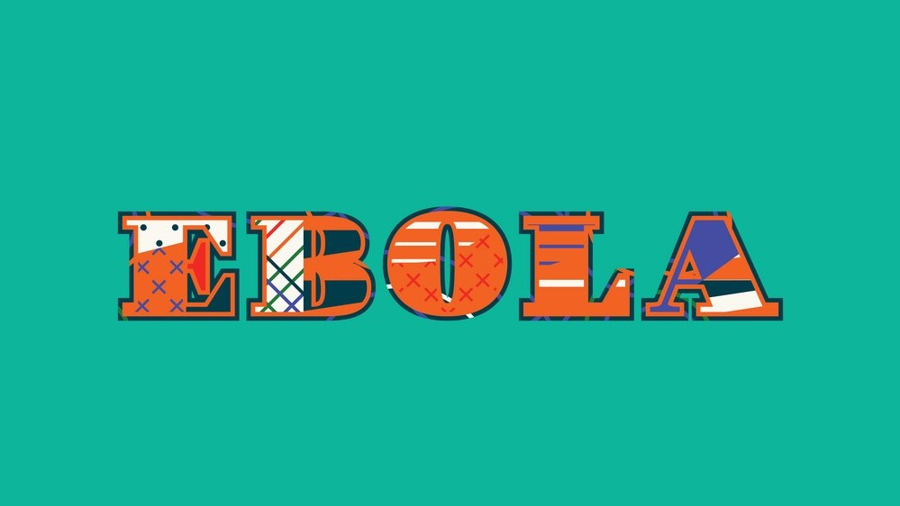

Virus Ebola menyebabkan penyakit akut dan serius yang seringkali berakibat fatal jika tidak diobati. EVD pertama kali muncul pada tahun 1976 dalam 2 wabah serentak, satu di tempat yang sekarang Nzara, Sudan Selatan, dan yang lainnya di Yambuku, DRC. Yang terakhir terjadi di sebuah desa di dekat Sungai Ebola, dari mana penyakit ini mengambil namanya. Read More
- 

Kasus Penyebaran Ebola
Kawasan Terinfeksi Ebola
Pengendalian wabah yang baik bergantung pada penerapan paket intervensi, termasuk manajemen kasus, pengawasan dan pelacakan kontak, layanan laboratorium yang baik, penguburan yang aman, dan mobilisasi sosial. Keterlibatan masyarakat adalah kunci keberhasilan mengendalikan wabah. Meningkatkan kesadaran akan faktor risiko untuk infeksi Ebola dan tindakan perlindungan (termasuk vaksinasi) yang dapat dilakukan individu adalah cara yang efektif untuk mengurangi penularan manusia. Pesan pengurangan risiko harus fokus pada beberapa faktor: Read More
Peta Wilayah Kasus Penyebaran Virus Ebola
Wabah EVD yang terjadi selama 2014-2016 di Afrika Barat adalah yang terbesar sejak virus ini pertama kali ditemukan pada tahun 1976. Wabah dimulai di Guinea dan kemudian pindah melintasi perbatasan darat ke Sierra Leone dan Liberia. Lebih dari 21 bulan sejak kasus terkonfirmasi pertama yang dicatat pada 23 Maret 2014, 11.315 orang telah dilaporkan meninggal karena penyakit ini di enam negara, yaitu Liberia, Guinea, Sierra Leone, Nigeria, USA dan Mali. Dimana jumlah total kasus yang dilaporkan adalah sekitar 28.637 buah kasus. Read More